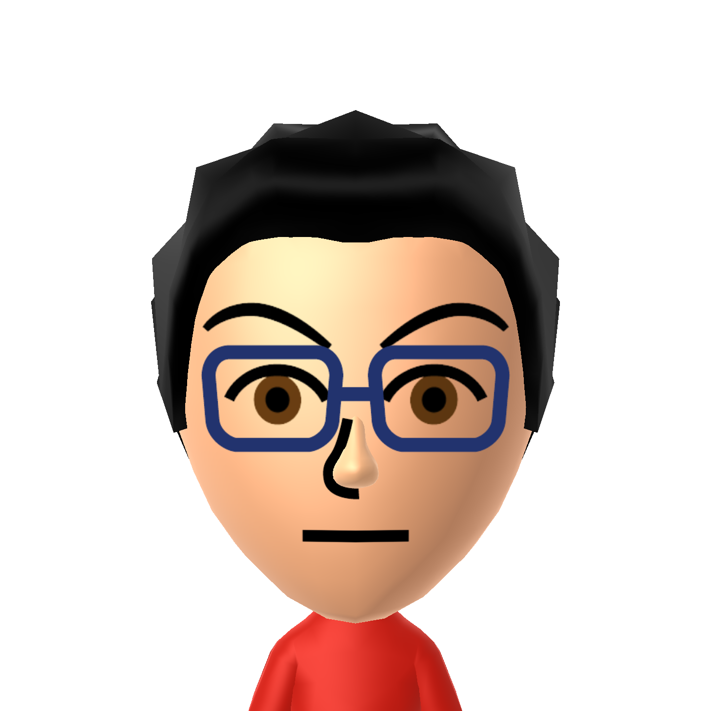
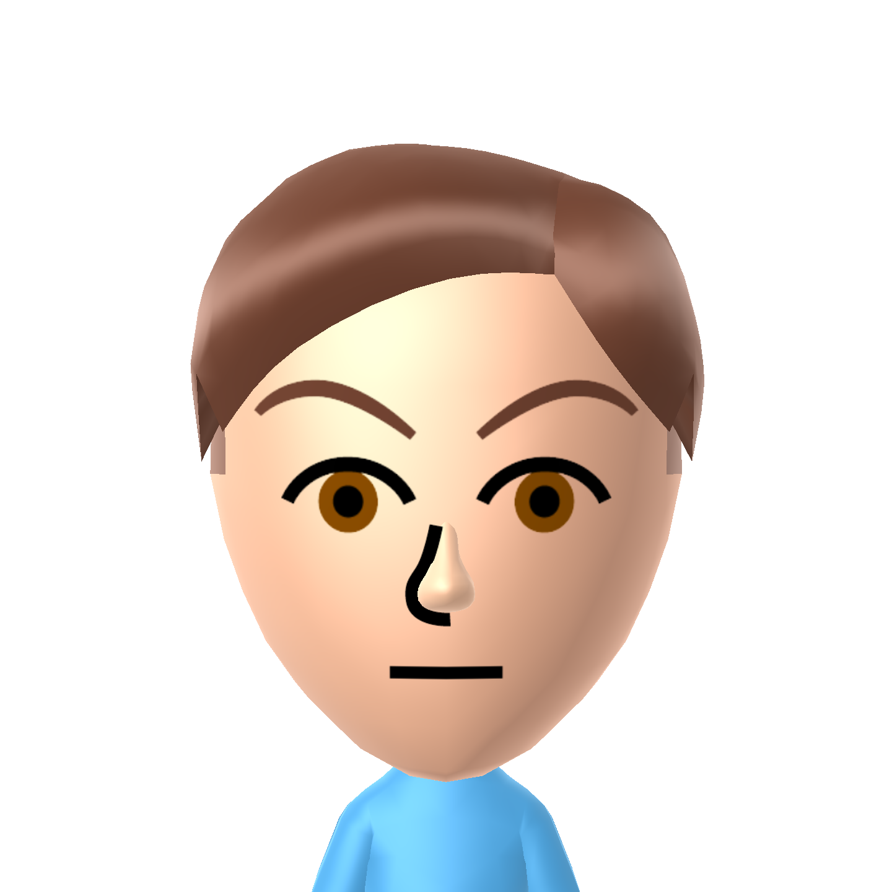
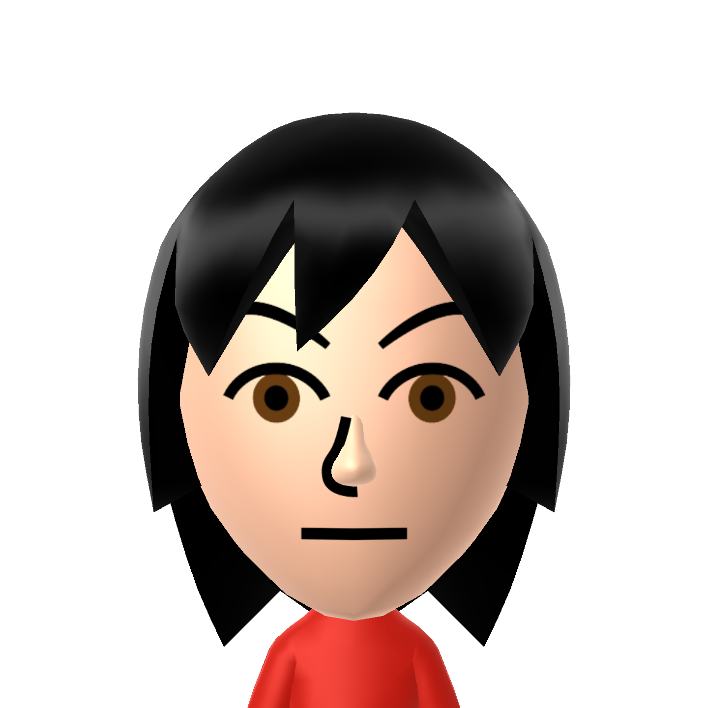
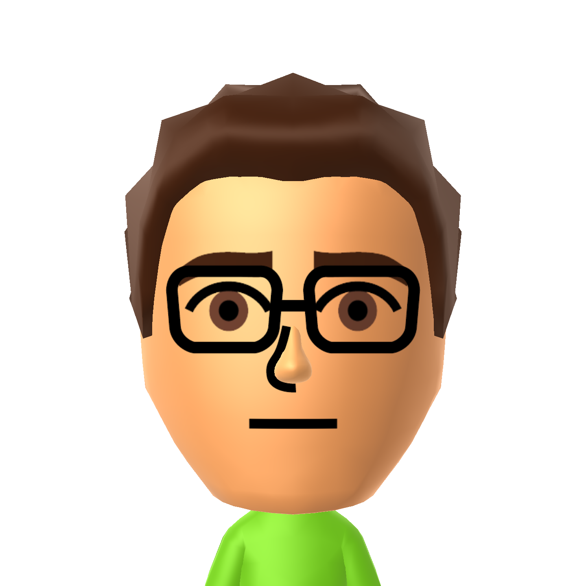
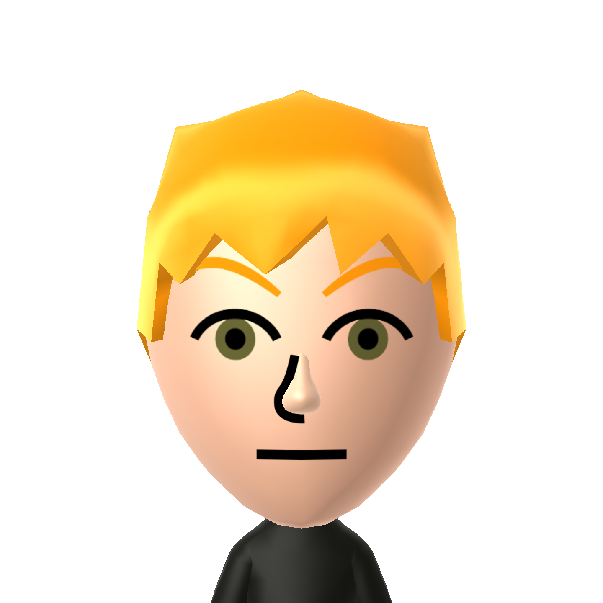

Equipe
Conheça os integrantes responsáveis pelo desenvolvimento desse site.
Integrantes

Lorenzo
Programador principal: Responsável pela estruturação inicial do código e pela organização da implementação do portal. Conduziu a construção da estrutura das páginas e a implementação dos componentes e funcionalidades, incorporando progressivamente as exigências do projeto repassadas pelos demais integrantes.

Noah
Pesquisa e colaboração técnica: Participou da seleção de artigos e materiais de referência, da pesquisa e da elaboração dos textos. Também colaborou com a programação, especialmente na transmissão dos conhecimentos de Bootstrap trabalhados em aula e no acompanhamento da implementação dos componentes.

Téo
Programador auxiliar: Atuou diretamente ao lado do programador principal durante o desenvolvimento, colaborando na construção e na implementação dos códigos HTML, CSS e, especialmente, JavaScript. Participou de forma próxima das decisões e da resolução de questões técnicas.

Gabriel
Designer: Responsável pelo planejamento visual do portal, pela disposição dos conteúdos, pela organização do layout e pela definição e implementação das cores. Acompanhou de perto a etapa de CSS, colaborando com a aplicação das decisões de design na interface.

Wilmar
Pesquisa e colaboração técnica: Participou da elaboração dos textos, da seleção de imagens e da pesquisa de conteúdo. Também contribuiu com a programação e com a aplicação dos conhecimentos de Bootstrap, acompanhando e auxiliando a implementação dos recursos da biblioteca.